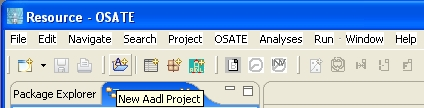
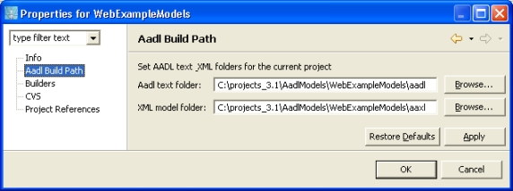

Previous
Next
Previous
Next 
| 4.2 Managing AADL Models with Eclipse Projects |
When you work in Eclipse/OSATE you access files in your file system through workspaces.
You can set up multiple workspaces, but you can only work in one workspace at a time. You
can use “File > Switch Workspaces…” to switch between workspaces.
A workspace can be any folder in your file system. The workspace is organized into projects.
Each project can be version controlled separately. Projects can be sub-structured through
folders.
OSATE also provides support for large-system modeling through separately developed AADL
models and for teams of people developing such models. OSATE makes use of the Eclipse
workspace and projects to allow large AADL models to be split into multiple files and to
support the team support services of Eclipse that interface with version control systems.
OSATE provides an automatic build capability that maintains consistency between AADL text
files and AADL XML files by regenerating one when the other is changed by the modeler. It
does so by propagating changes to AADL packages and property sets to other AADL files
that potentially are affected. Furthermore, it automatically regenerates any AADL instance
model that is potentially affected by changes to AADL models.
| 4.2.1 AADL Projects |
An AADL project can be created through the AADL Project wizard by invoking “New >
Project…” in the “File” menu or the context menu of the Navigator, and then selecting “Aadl
Wizards > Aadl Project”. The wizard is also available as a button () in the toolbar; see
Figure 6.

Figure 6: The "New Aadl Project" wizard button in the OSATE toolbar.
AADL text files are kept in an “AADL text” folder and AADL XML files are kept in a “model
folder.” (This is similar to the Eclipse Java IDE keeping Java text files in a folder called “src”
and the class files in a folder called “bin”.) By default these folders are called “aadl” and
“aaxl”. You can change these directories using the “AADL Build Path” panel in the project’s
“Properties” dialog as shown in Figure 7. In this document we assume the directories have the
default names “aadl” and “aaxl”. In general, there is a one-to-one correspondence between the
contents of the two directories, and they have a parallel structure. AADL instance models,
however, are stored as object models only in the “aaxl” directory.

Figure 7: Changing the aadl text and xml model folders in the project "Properties" dialog box.
There are two special directories, exemplified in Figure 8, named “packages” and
“propertysets” in the “aadl” and “aaxl” directories. It is expected that files containing package
declarations be kept in the “packages” folder, and that files containing property set declarations
be kept in the “propertysets” folder. The names of these folders must not be changed.

Figure 8: AADL projects have special "packages" and "propertysets" directories in both the text and
model folders.
| 4.2.2 AADL Models as Files |
Note: In Eclipse, files are referred to as “resources”.
OSATE understands three file extensions as AADL file types:
- aadl: textual AADL models. Files with this extension can be edited by a generic text editor or by the AADL text editor
- aaxl: AADL object models in XML. These AADL object models represent the AADL models corresponding to the textual AADL model (declarative AADL models) or AADL instance models (instantiations of systems—see section 7.2). Files with this extension can be edited as XML files by a generic text editor, or as an AADL object model by the AADL Object Editor.
- aaxldi: diagram files for AADL object models. They contain the layout information of the graphical view. The graphical AADL editor is opened on diagram files.
The following conventions are expected by OSATE:
- An AADL specification file can contain component declarations as well as property sets and AADL packages. In OSATE AADL packages and property sets that are contained in an AADL Spec file are only visible within that AADL specification. A file that contains an AADL specification can be given any legal AADL name with the aadl file extension for AADL text files or the aaxl file extension for AADL object models. Aadl specification files are expected to be placed in the aadl folder, and aaxl files are placed into the aaxl folder.
- An AADL PropertySet file contains a single property set. The text form of this file has the aadl extension, while the object model has the aaxl extension. A property set file can be kept in the aadl or aaxl folder respectively or in the corresponding propertysets subfolder. A property set in an AADL Propertyset file is globally visible in the Eclipse workspace. In other words, different projects in the same workspace cannot contain separate copies of a property set. AADL PropertySet files can be given any name that is unique within the Eclipse workspace. We recommend that the file name correspond to the property set name.
- An AADL Package file contains a single AADL Package. The text form of this file has the aadl extension, while the object model has the aaxl extension. A package file can be kept in the aadl or aaxl folder respectively or in the corresponding packages subfolder. An AADL package in an AADL Package file is globally visible in the Eclipse workspace. In other words, different projects in the same workspace cannot contain AADL Package files with the same package name. The exception to this rule is that the user can have two AADL Package files for the same package if one contains the public section and the other the private section only.
AADL Package files can be given any name that is unique within the Eclipse workspace. We recommend that if the file name is to correspond to the package name, the “::” in the AADL package name replaced by “-” or by “.”. For any particular package file, the same replacement character must be used for all “::” in the package name, but different package files can use different replacements. For example, “MyExamples.aadl”, “edu_cmu_sei_Examples.aadl” and “edu-cmu-sei- MoreExamples.aadl” are acceptable names for an AADL package named Examples. If the public section and private section of an AADL package are stored in separate files, their file names must differ, e.g., “MyExamples” and “MyExamplesPrivate”.
Note: We plan to reflect the package name hierarchy as a folder hierarchy in the next release of OSATE..
- A file that contains an AADL instance model will only be stored as an AADL XML file. Its name is automatically generated by OSATE when an AADL model is instantiated (see section 7.4). The file name consists of the AADL specification name or package name containing the system implementation being instantiated, the system type name and the word “Instance”, separated by the character “_”.
There is a one-to-one correspondence between AADL text files and AADL declarative model
XML files. In other words, each AADL text file is converted into a single AADL XML file
and vice versa.
| 4.2.3 AADL Namespaces |
In AADL, packages and property sets reside in a global namespace. This means that
components and properties declared in them can be referenced by other packages and
property sets. In addition, each AADL specification has an anonymous namespace. Items
declared in an AADL specification are accessible within that AADL specification only.
In OSATE an Eclipse workspace represents a global namespace. An AADL PropertySet file
or an AADL Package file, i.e., a file with a single property set or package, is considered to
reside in the global name space. Each Eclipse workspace can only contain one globally visible
property set or AADL package with the same name and file name.
Aadl packages or property sets contained in an AADL Specification file are “locally” declared,
i.e., only visible within that AADL Specification file. Members of a globally declared package
or property set may be referenced by any AADL specification/property set/package in the
workspace. Members of a locally declared package or property set may only be referenced
from within the same file, thus the “local” appellation. A locally declared package or property
set in an AADL Specification file takes precedence over any global package or property set
with the same name. In other words, a user can place multiple AADL Specification files into
the same workspace or even the same project without causing name conflicts.